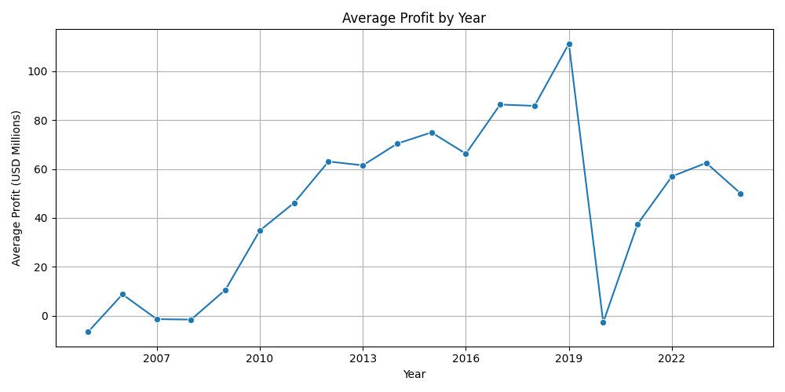
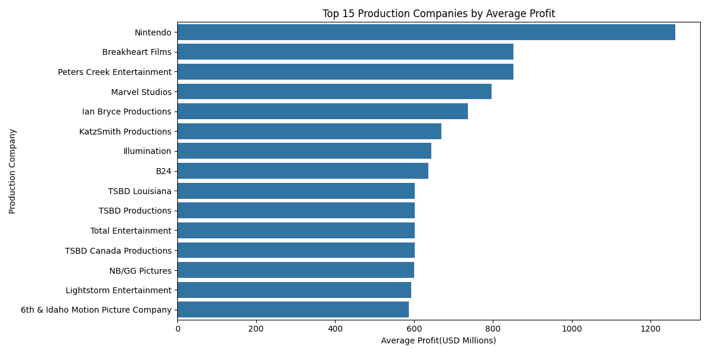
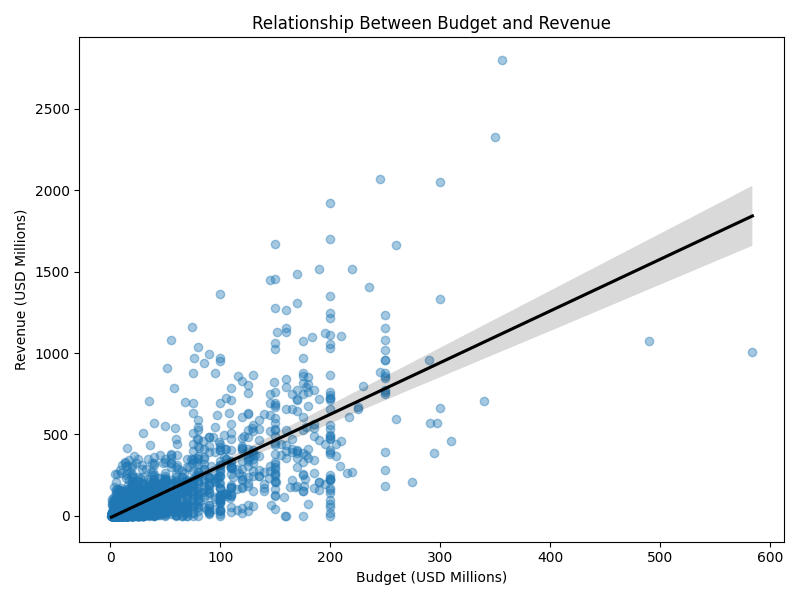
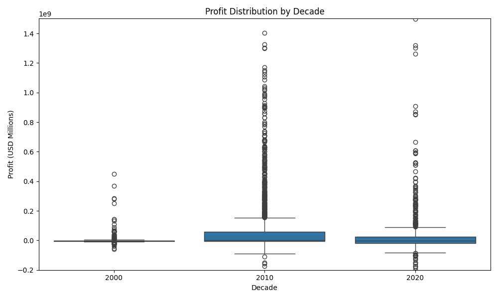

Movie Analysis Package
Introduction
The film industry has undergone dramatic changes over the past two decades. From the rise of streaming platforms to shifts in genre popularity and production trends, understanding what drives profitability in cinema is crucial for directors, actors, producers, etc. This project explores a large dataset of theatrical movie releases from 2005 to 2025, using data collected from the TMDB (The Movie Database(themoivedb.org)) API. Our goal was to build a full data science pipeline, from raw collection to analysis and visualizations. To highlight patterns in budget, revenue, and profitability over time.
Data Collection
We used the TMDB API to collect comprehensive metadata for all theatrical movie releases between 2005 and 2025. Our scraping was done using custom Python scripts that navigated TMDB’s paginated API, collecting over 200,000 movie entries.
To ensure consistency and relevance, we filtered down to only movies that had a theatrical release, were produced in the U.S. and had a revenue greater than 0. Due to API rate limits, collecting all data took over 50 hours, as we respected TMDB’s throttling guidelines by sleeping between requests.
The two main scripts used were:
getMovieIDs.py: Collected unique TMDB movie IDs by yeargetMovieData.py: Fetched full metadata for each movie ID (title, genres, budget, revenue, etc.)
Data Cleaning
The raw dataset was large but noisy. Many entries were missing critical data like release_date, budget, or revenue. To ensure meaningful analysis, we:
- Removed all entries with missing dates, budget, or revenue
- Filtered for U.S.-based productions only
- Extracted only relevant fields such as title, genre list, production companies, and financial data
This cleaning process reduced our dataset from over 200,000 entries to 3,503 high-quality entries. The cleaned dataset was stored in cleaned_movies.json and used in all subsequent analysis.
Variables Used
We focused on the following key variables:
title: Movie titlerelease_date: Original theatrical release datebudget: Reported production budget (in USD)revenue: Reported box office revenue (in USD)genres: List of genres (e.g., Action, Drama)production_companies: Companies involved in the movie- Derived:
year: Extracted fromrelease_dateprofit: Calculated asrevenue - budget
Exploratory Data Analysis
Summary Statistics
We first generated basic summary statistics on the cleaned dataset:
- Total movies: 3,503
- Average budget: ~$34 million
- Average revenue: ~$91 million
- Average profit: ~$57 million
Add monetary values are reported in USD millions. The large gap between aerage budget and average revenue suggest that, on average, films are profitabel, but these averages are heavily influenced by a small number of extremely successful movies, who greatly exceeed their budget.
Profit Over Time

This figure shows the average movie profit by year from 2005 to 2025. There is a clear upward trend in profitability through the mid-2010s, reflecting increasing budgets, global box office expansion, and franchise-driven releases.
A sharp decline occurs around 2020, corresponding to the COVID-19 pandemic, which severely disrupted theatrical releases. While profits recover in subsequent years, they do not immediately return to pre-pandemic levels, suggesting a structural shift in the film industry.
Average Profit by Genre

This plot compares average profitability across genres. Action, Adventure, and Animation films tend to generate the highest average profits, likely due to their global appeal and franchise potential.
In contrast, genres such as Drama and Romance show lower average profits, reflecting smaller budgets and more limited box office reach. This highlights how genre selection plays a significant role in financial outcomes.
Top Production Companies by Profitability

This figure shows the top 15 production companies ranked by average profit per film. Larger studios and productions houses dominate the list, benefiting from scale, marketing power, and established intellectual property.
However, the presence of variability within companies suggest that even major studios experience hits and duds at the box office, which shows the inherent risk of film production.
Statistical Analysis
Budget vs. Revenue Relationship

To quantify the relationship between production spending and financial return, we examined the correlation between budget and revenue. The scatterplot reveals a strong positive relationship: films with larger budgets tend to generate higher revenues.
However, the wide spread of points indicates substantial variance, meaning higher budgets do not guarantee success. This result supports the idea that while budget enables scale and visibility, market reception remains uncertain.
Profit distribution by Decade

This boxplot shows how the distribution of movie profits has evolved across decades. More recent decades exhibit higher median profits but also significantly greater variability and more extreme outliers.
The increasing spread suggests that modern film production has become a higher-risk, higher-reward industry, where a small number of blockbuster films drive much of the total profitability.
Conclusion
This project built a complete data science pipeline to analyze profitability trends in the U.S. film industry from 2005 to 2024 using data collected from the TMDB API. After extensive data collection and cleaning, we analyzed 3,503 theatrical releases to explore how profit varies across time, genre, production companies, and budget levels.
Our analysis shows that average movie profitability increased steadily through the mid-2010s before experiencing a sharp decline around 2020, corresponding to disruptions caused by the COVID-19 pandemic. While profits partially recovered in subsequent years, the volatility observed highlights ongoing structural changes in the industry.
Genre and production company analyses reveal that large-scale, franchise-driven films—particularly in action, adventure, and animation—tend to generate the highest average profits, while smaller, character-driven genres exhibit lower financial returns. Additionally, statistical analysis confirms a strong positive relationship between budget and revenue, though with substantial variability, reinforcing that high budgets do not guarantee success.
Overall, the results suggest that modern film production is a high-risk, high-reward environment dominated by a small number of blockbuster successes. Future work could extend this analysis by incorporating streaming revenue, international production trends, or inflation-adjusted financial metrics to better understand long-term industry dynamics.